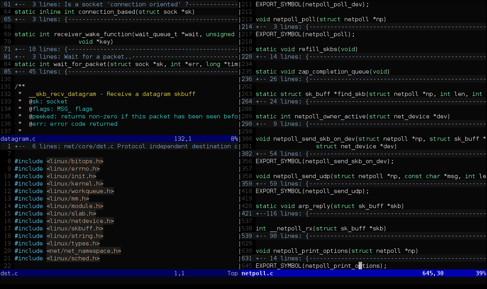

1 掌握你的電腦
1.1 路徑 & 工作目錄
電腦透過資料夾 (directory) 與檔案 (file) 將資訊組織起來，方便與使用者互動。資料夾裡面可以是另一個資料夾，也可以是檔案。換言之，資料夾是有階層結構的，可以一層層的包覆起來
在使用電腦時，我們通常是透過圖形使用者界面 (GUI) 與電腦互動。在操作檔案與資料夾時，我們通常會透過檔案管理員這類的程式 (Figure 1.1)
![Windows 與 Mac 的檔案管理界面^[MacOS's figure source: <https://www.dummies.com/computers/macs/mac-operating-systems/basics-of-the-os-x-folder-structure/>]](assets/img/folder_gui.png)
Figure 1.1: Windows 與 Mac 的檔案管理界面1
-
對於初次接觸程式的同學，需要逐步習慣使用 Text-based user interfaces (TUI) (下圖)。透過 TUI 與電腦互動意謂著使用者(幾乎)只能使用鍵盤，也意謂著使用者需了解更多的程式指令以及電腦組織檔案與資料夾的方式。但與此同時，使用者將能更好地掌握自己的電腦2

1.1.1 目錄結構 (Directory structure)
為方便理解電腦裡面的資料夾與檔案結構 (簡稱目錄結構)，我們通常會以樹狀結構去表示目錄結構。Figure 1.2 是 Windows 以及 Mac 上的目錄結構圖
在樹狀圖中，越上方的資料夾階層越高。最上方的資料夾稱為根目錄 (root)，電腦中的所有其它資料夾與檔案皆位於根目錄之內3
Figure 1.2: 目錄結構
1.1.2 路徑 (Path)
使用 Text-based user interfaces (TUI) 與電腦互動時，需要一套用來描述路徑 (Path) (亦即, 某個資料夾或檔案位於電腦上的哪個位置) 的語法。這套語法基本上就是在告訴電腦「如何從 A 資料夾『走到』目標資料夾 (或檔案)」
1.1.2.1 絕對路徑
絕對路徑就是在告訴電腦「如何從根目錄 (root)走到目標資料夾 (或檔案)」
-
/在描述路徑時具有 2 種語意： - 舉例來說，
Figure 1.3: 絕對路徑
現在是時候打開終端機 (Terminal) 玩玩看了 (解鎖你電腦的 1 號隱藏功能)。
Windows
按下 Windows 鍵
⊞搜尋：cmd打開「命令提示字元」-
在跳出來的黑黑的視窗輸入
cd，此時應會印出一個絕對路徑4：C:\Users\{username}這個路徑包含 3 個資料夾
C:,Users以及{username}，其中{username}是你登入電腦的使用者名稱
Mac
在 Finder 搜尋
Terminal或終端機-
在跳出來的黑黑的視窗輸入
pwd，此時應會印出一個絕對路徑/Users/{username}這個路徑包含 3 個資料夾
/,Users以及{username}，其中{username}是你登入電腦的使用者名稱
工作目錄 (Working Directory)
這個出現在終端機上的絕對路徑即是目前終端機程式的工作目錄。所以到底什麼是工作目錄？
由於程式 (e.g., 終端機, R, Python, Chrome, …) 運行時需要與電腦進行互動，換言之，它們經常需要讀取、修改、刪除與寫入檔案與資料夾，但同時又不需要知道電腦上完整的目錄結構，因此它們需要有一個參照用的資料夾，以此資料夾作為描述路徑的基準。這個參照的資料夾就如同執行中的程式工作的地方，因此稱為工作目錄；而用來描述相對於工作目錄的路徑則稱為相對路徑。
而上面 C:\Users\{username} (Windows) 與 /Users/{username} (Mac) 這兩個路徑， 即是終端機開啟時預設的工作目錄。下方介紹完相對路徑後，接著會告訴大家如何更改工作目錄。
1.1.2.2 相對路徑
相對路徑就是在告訴電腦「如何從工作目錄 (working directory) 走到目標資料夾 (或檔案)」。以下方的目錄結構為例 (工作目錄設在 /Users/Pooh)，
Figure 1.4: 範例目錄結構。在此例中，工作目錄設置在 Pooh
-
.表示的是「當前」的目錄，所以若其出現在路徑的開頭，即是指工作目錄5。所以透過相對路徑表示工作目錄非常簡短：. -
若要表示工作目錄之下的檔案或資料夾，例如
Desktop，其相對路徑即為其名稱：Desktop或是，也可以在透過
.表示當前目錄之後，再於後方加入檔案或資料夾的名稱：./Desktop -
依此類推，工作目錄下面兩個階層的檔案或資料夾 (例如，
i.txt) 的相對路徑為：Desktop/i.txt ./Desktop/i.txt -
..則讓我們可以往上走。例如，若想表示工作目錄的母資料夾Users，可以使用..：.. ./.. -
這讓我們可以很方便地表示工作目錄的「姊妹」資料夾
Tiger(它們共同的母資料夾是Users)：../Tiger ./../Tiger
Figure 1.5: 透過相對路徑表示「姊妹」的資料夾
-
同理，若要表達
Tiger之下的he.txt，只需在原本的路徑之後加入檔名：../Tiger/he.txt ./../Tiger/he.txt
1.2 R 101
現在我們已經知道如何操作終端機了。接下來，我們就可以透過終端機執行我們的第一支 R 程式：
-
透過文字編輯器9新增一份純文字檔，將檔案命名為
hello.R。hello.R內請寫下：print("Hello World!") -
打開終端機，
cd到hello.R所在的資料夾 (e.g.,C:/Users/Tiger/Desktop)，再執行Rscript hello.R:cd ./Desktop Rscript hello.R -
這時，你應該會看到終端機裡印出：
[1] "Hello World!"
試著修改 hello.R 的內容，然後重複執行 Rscript hello.R，看看輸出指令如何改變。你可以嘗試以下的指令：
print("Hi")(2 + 7) / 102 ^ 31:4
在 hello.R 裡面，你可以輸入不只一條指令，但注意，每一條指令需佔獨立的一行。例如，若要輸入三條指令，hello.R 的樣子會類似：
1.2.1 R Script
hello.R 這類用來撰寫程式的純文字檔稱為 R script (而執行 R Script 裡程式的指令為 Rscript)。在 R script 中，程式碼是由上至下執行，所以上面的例子
執行後會依序印出這三行的執行結果：
[1] "Hello World!"
[1] "Hi"
[1] 0.91.2.2 回傳值
-
在上方的例子中，印出的執行結果前面皆有一個
[1]。這個[1]的目的是為了方便使用者知道指令執行的結果 (回傳值) 的「位置」。事實上，R 印出回傳值的形式是：[<num>] <value(s)>：-
<value(s)>是指令所傳回來的值 (可有一個以上)，e.g.1or1 2 3 4or"a" "b" "c" "d" - 而
[<num>]則是一個指標 (位於每橫列的開頭)，用來指示其右邊第一個值在所有的值之中的排序，e.g.[1] 11 12 13代表11是第 1 個數值、12是第 2 個數值；若第一行不足以印出所有的值，則會接著印出第二行: 例如[16] 26 27 28代表26是第 16 個。
-
-
例如，執行
1:50會回傳 50 個值 (1~50)。因為終端機一行無法顯示全部的值，它便會將結果用多行 (行數每台電腦可能不同) 顯示，並透過[<num>]方便使用者知道目前印到哪一個值：1:50#> [1] 1 2 3 4 5 6 7 8 9 10 11 12 13 14 15 16 17 18 19 20 21 22 23 24 25 #> [26] 26 27 28 29 30 31 32 33 34 35 36 37 38 39 40 41 42 43 44 45 46 47 48 49 50
1.2.3 變數指派 (Assignment)
要將指令的回傳值儲存起來，需要使用 <- (assignment operator)，將 <- 右邊的程式碼執行後所回傳的數值儲存於 <- 左邊的變數
例如，我可以先將 2 * 3 + 4 的運算結果儲存在 x 內：
x <- 2 * 3 + 4之後，我可以輸入 x 直接取用上次運算的結果：
x#> [1] 10
x + 1 # 用 x 內的值進一步運算#> [1] 111.2.4 R 內建函數
-
R 裡面的函數就像是我們國高中數學課學到的「函數」。
- R 的函數 (通常) 會有一個或多個「輸入值」，稱為「引數 (argument)」；並且在運算完成後，一定會丟出一個「回傳值」
-
sqrt()是一個函數，它會將輸入值 (在圓括號內) 開根號後回傳sqrt(16)#> [1] 4 -
函數裡面可以放入另一個函數 (e.g.
sqrt(sqrt(16)))，其運算的次序是由內而外，先執行最內部的函數，取得回傳值後，再將此回傳值作為外面的函數的輸入值#> [1] 2概念上等同於：
#> [1] 2